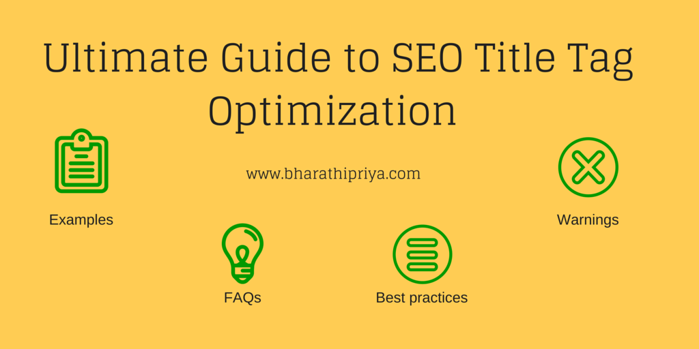
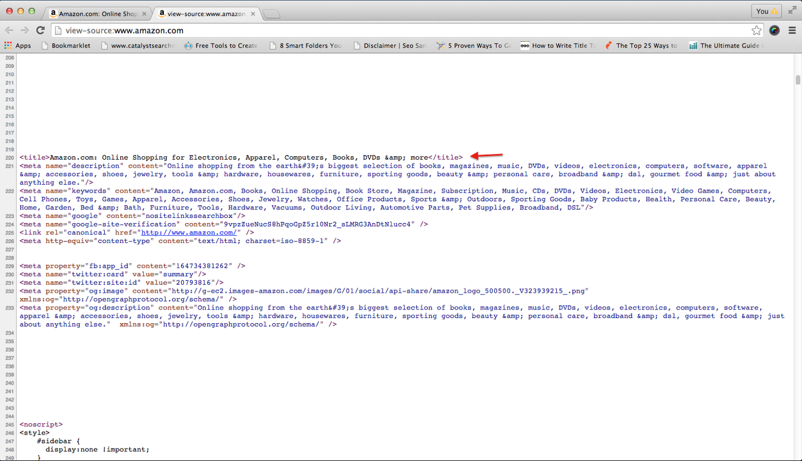

SEO HTML Title Tag Optimization (Examples, FAQs & Best Practices)
Optimización de etiquetas de título SEO HTML (ejemplos, preguntas frecuentes y mejores prácticas)
El que se coloca dentro de una etiqueta de encabezado html como la sintaxis a continuación es la etiqueta de título. Al buscar cualquier página web, los motores de búsqueda obtienen el contenido de la etiqueta del título y también muestran el mismo título en los resultados de búsqueda. Se producirá un comportamiento similar durante el intercambio en las redes sociales. Tomemos amazon.com como ejemplo. La que se señala a continuación es la etiqueta de título de Amazon, que se puede ver cuando pasa el mouse sobre la pestaña abierta en cualquier navegador. Algunos navegadores como Firefox le mostrarán la etiqueta del título en la parte superior del navegador.
.png)
¿Te preguntas cómo se agregó? Incluso puede ver su fuente web. Haga clic derecho en su sitio web, puede ver algo llamado "ver código fuente de la página". Al hacer clic en este, se le llevará a esta página. Busque como título a través de Ctrl+F, puede ver su etiqueta de título a la vez.

And if you optimized your title tag perfectly and if you provide valid quality content related to the search query, you can also enjoy being treated as special as below. Have the main keyword prominently placed inside title tag. For example: Place your main keyword first, followed by your brand name Main keyword- Brand name If you have another keyword to focus, you can include it too. Main keyword, secondary keyword — Brand name You can see an example screenshot below where primary, secondary keyword and brand name has been highlighted for your reference.
Why title tag optimization? Title tag describes about the page to search engines and your users. By having your main keyword in title tag, search engines understand that this page is related to the specific keyword and index it accordingly for respective keyword search results. So it’s a must to focus more and optimize your title tag to get more traffic and visibility to your website. From the below screenshot, you can clearly see how results are fetched based on the title tag which is relevant to your search query.